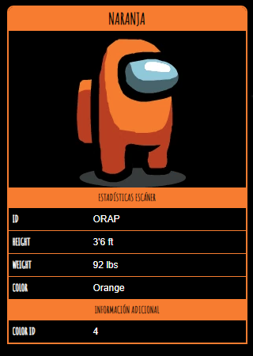

Naranja

Naranja es uno de los colores principales en Among
us que el jugador puede
personalizar.
Curiosidades
- Naranja está en el ícono de "Discusión" junto con Verde
después que una Reunión de Emergencia es llamada.
- En la sección de "Cómo Jugar" Naranja es al que el Impostor
encierra
con el sabotaje de puerta y al que el Impostor mata
en Seguridad.